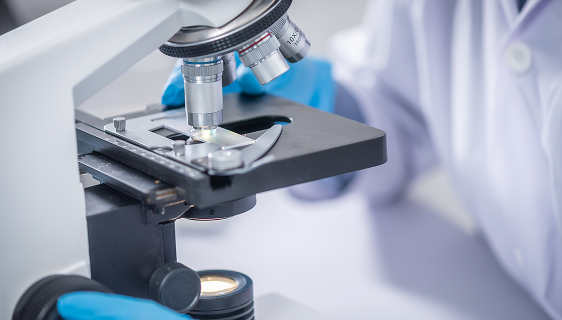
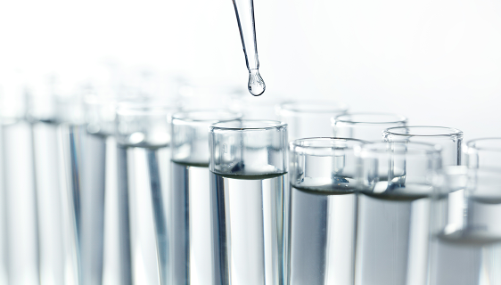

副産物まで肥料として再生し 完全なゼロウェイストプロセスを
ヒトデから骨片とコラーゲンを抽出する過程で生じる副産物を環境配慮型肥料として開発し、 ヒトデによる国内養殖業被害、買い取り・焼却費用、焼却による大気汚染の浄化費用など 従来の廃棄過程で生じる環境問題を解決します。
Strengths
圧倒的な再生力を持つヒトデ成分で作られ 優れた性能に加え、アップサイクル技術で 低価格で使用できます。
動物性アミノ酸17種含有比率
85%
窒素・リン酸・カリウム含有比率
20%
創出される社会的価値(KRW)
40,550
使用可能な作物
21種
*Fetilizeブランド内 プルスギ基準
Key Technology
骨片とコラーゲン抽出過程の副産物まで 全量資源化し、100％アップサイクル技術を 完成しました。

ヒトデの骨片とコラーゲン抽出後に残る海洋性ペプチド、アミノ酸、海洋性サポニンを含み、 作物の生育を促進し病害虫抵抗性を高めました。

窒素・リン酸・カリウムと微量要素など、不足しやすい栄養分を配合し、 栄養欠乏による生理障害の予防と回復を支援します。
Brand Line-up
ブランドラインアップ
プルスギ
プルスギは、再生力に優れたヒトデと豊富なアミノ酸を含む 100%環境配慮型液体肥料です。
お問い合わせ
ご不明な点は ございますか？
ブランドや製品に関するご質問をお送りください。 担当部署が確認のうえ、詳しくご案内します。